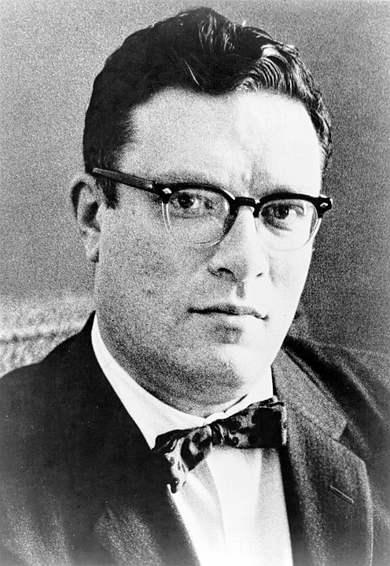
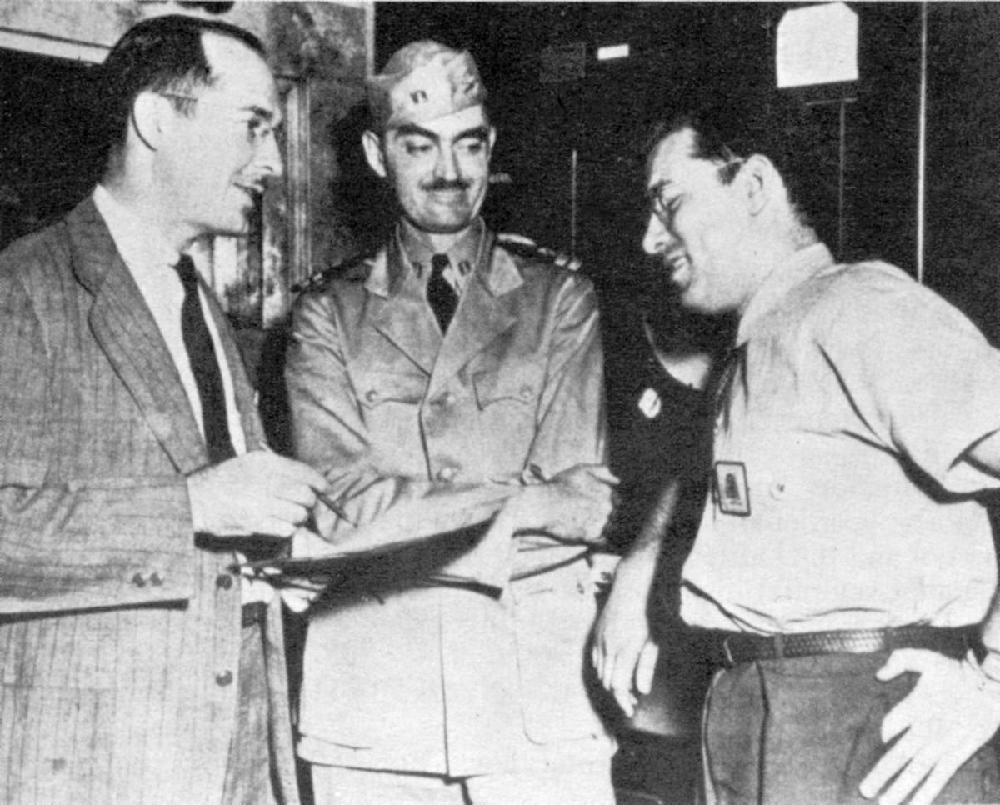
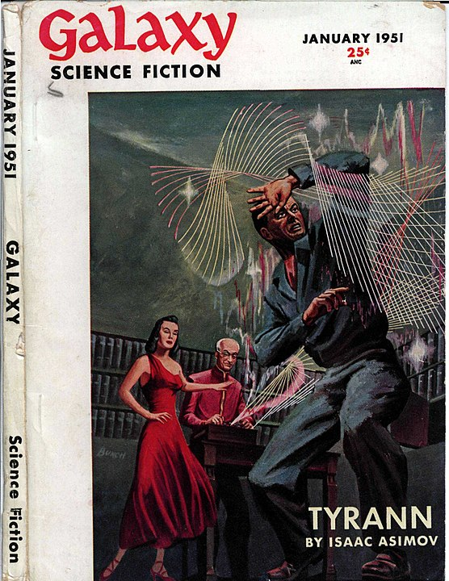
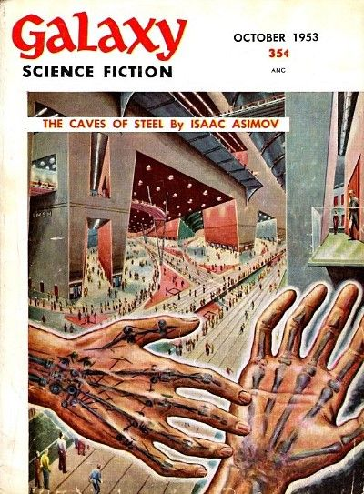
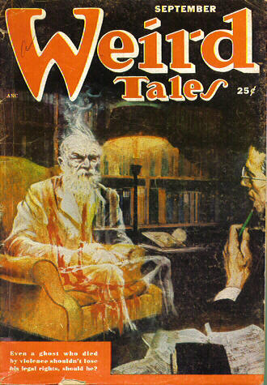

Please log in.
Early life
Asimov was born in Petrovichi, Russian SFSR,[18] on an unknown date between October 4, 1919, and January 2, 1920, inclusive. Asimov celebrated his birthday on January 2.[a] Asimov's parents were Anna Rachel (née Berman) and Judah Asimov, a family of Russian Jewish millers. He was named Isaac after his mother's father, Isaac Berman.[19] Asimov wrote of his father, "My father, for all his education as an Orthodox Jew, was not Orthodox in his heart", noting that "he didn't recite the myriad prayers prescribed for every action, and he never made any attempt to teach them to me".[20] In 1921, Asimov and 16 other children in Petrovichi developed double pneumonia. Only Asimov survived.[21] He later had two younger siblings: a sister, Marcia (born Manya;[22] June 17, 1922 April 2, 2011),[23] and a brother, Stanley (July 25, 1929 August 16, 1995), who was vice-president of the Long Island Newsday.[24][25] Asimov's family travelled to the United States via Liverpool on the RMS Baltic, arriving on February 3, 1923[26] when he was three years old. His parents spoke Yiddish and English with him, and he remained fluent in those; he never learned Russian.[27] Growing up in Brooklyn, New York, Asimov taught himself to read at the age of five (and later taught his sister to read as well, enabling her to enter school in the second grade).[28] His mother got him into first grade a year early by claiming he was born on September 7, 1919.[29][30] In third grade he learned about the "error" and insisted on an official correction of the date to January 2.[31] He became a naturalized U.S. citizen in 1928 at the age of eight.[32] After becoming established in the U.S., his parents owned a succession of candy stores in which everyone in the family was expected to work. The candy stores sold newspapers and magazines, which Asimov credited as a major influence in his lifelong love of the written word, as it presented him with an unending supply of new reading material (including pulp science fiction magazines)[33] as a child that he could not have otherwise afforded. Asimov began reading science fiction at age nine, at the time that the genre was becoming more science-centered.[34] Asimov was also a frequent patron of the Brooklyn Public Library during his formative years.[35]
Education and career
Asimov attended New York City public schools from age five, including Boys High School in Brooklyn.[36] Graduating at 15, he attended the City College of New York for several days before accepting a scholarship at Seth Low Junior College. This was a branch of Columbia University in Downtown Brooklyn designed to absorb some of the academically qualified Jewish and Italian-American students who applied to the more prestigious Columbia College, but exceeded the unwritten ethnic admission quotas which were common at the time. Originally a zoology major, Asimov switched to chemistry after his first semester because he disapproved of "dissecting an alley cat". After Seth Low Junior College closed in 1936, Asimov finished his Bachelor of Science degree at Columbia's Morningside Heights campus (later the Columbia University School of General Studies)[37] in 1939. After two rounds of rejections by medical schools, Asimov applied to the graduate program in chemistry at Columbia in 1939; initially he was rejected and then only accepted on a probationary basis,[38] he completed his Master of Arts degree in chemistry in 1941 and earned a Doctor of Philosophy degree in chemistry in 1948.[d][43][44] During his chemistry studies, he also learned French and German.[45] In between earning these two degrees, Asimov spent three years during World War II working as a civilian chemist at the Philadelphia Navy Yard's Naval Air Experimental Station, living in the Walnut Hill section of West Philadelphia from 1942 to 1945.[46][47] In September 1945, he was drafted into the post-war U.S. Army; if he had not had his birth date corrected while at school, he would have been officially 26 years old and ineligible.[48] In 1946, a bureaucratic error caused his military allotment to be stopped, and he was removed from a task force days before it sailed to participate in Operation Crossroads nuclear weapons tests at Bikini Atoll.[49] He served for almost nine months before receiving an honorable discharge on July 26, 1946.[50][e] He had been promoted to corporal on July 11.[51] After completing his doctorate and a postdoc year with Dr. Robert Elderfield,[52] Asimov was offered the position of associate professor of biochemistry at the Boston University School of Medicine. This was in large part due to his years-long correspondence with Dr. William Boyd, a former associate professor of biochemistry at Boston University, who first reached out to compliment Asimov on his story Nightfall.[53] Upon receiving a promotion to professor of immunochemistry, Boyd reached out to Asimov, requesting him to be his replacement.[54] Unfortunately, the initial offer of professorship was withdrawn and Asimov was offered the position of instructor of biochemistry instead, which he accepted.[54] He began work in 1949 with a $5,000 salary[55] (equivalent to $57,000 in 2021), maintaining this position for several years.[56] By 1952, however, he was making more money as a writer than from the university, and he eventually stopped doing research, confining his university role to lecturing students.[f] In 1955, he was promoted to tenured associate professor. In December 1957, Asimov was dismissed from his teaching post, with effect from June 30, 1958, because he had stopped doing research. After a struggle which lasted for two years, he kept his title,[58] he gave the opening lecture each year for a biochemistry class,[59] and on October 18, 1979, the university honored his writing by promoting him to full professor of biochemistry.[60] Asimov's personal papers from 1965 onward are archived at the university's Mugar Memorial Library, to which he donated them at the request of curator Howard Gotlieb.[61][62] In 1959, after a recommendation from Arthur Obermayer, Asimov's friend and a scientist on the U.S. missile defense project, Asimov was approached by DARPA to join Obermayer's team. Asimov declined on the grounds that his ability to write freely would be impaired should he receive classified information, but submitted a paper to DARPA titled "On Creativity"[63] containing ideas on how government-based science projects could encourage team members to think more creatively.[64]
Personal life
Asimov met his first wife, Gertrude Blugerman (1917, Toronto, Canada[65] 1990, Boston, U.S.[66]), on a blind date on February 14, 1942, and married her on July 26.[67] The couple lived in an apartment in West Philadelphia while Asimov was employed at the Philadelphia Navy Yard (where two of his co-workers were L. Sprague de Camp and Robert A. Heinlein). Gertrude returned to Brooklyn while he was in the army, and they both lived there from July 1946 before moving to Stuyvesant Town, Manhattan, in July 1948. They moved to Boston in May 1949, then to nearby suburbs Somerville in July 1949, Waltham in May 1951, and, finally, West Newton in 1956.[68] They had two children, David (born 1951) and Robyn Joan (born 1955).[69] In 1970, they separated and Asimov moved back to New York, this time to the Upper West Side of Manhattan where he lived for the rest of his life.[70] He began seeing Janet O. Jeppson, a psychiatrist and science-fiction writer, and married her on November 30, 1973,[71] two weeks after his divorce from Gertrude.[72] Asimov was a claustrophile: he enjoyed small, enclosed spaces.[73][g] In the third volume of his autobiography, he recalls a childhood desire to own a magazine stand in a New York City Subway station, within which he could enclose himself and listen to the rumble of passing trains while reading.[74] Asimov was afraid of flying, doing so only twice: once in the course of his work at the Naval Air Experimental Station and once returning home from Oahu in 1946. Consequently, he seldom traveled great distances. This phobia influenced several of his fiction works, such as the Wendell Urth mystery stories and the Robot novels featuring Elijah Baley. In his later years, Asimov found enjoyment traveling on cruise ships, beginning in 1972 when he viewed the Apollo 17 launch from a cruise ship.[75] On several cruises, he was part of the entertainment program, giving science-themed talks aboard ships such as the Queen Elizabeth 2.[76] He sailed to England in June 1974 on the SS France for a trip mostly devoted to lectures in London and Birmingham,[77] though he also found time to visit Stonehenge.[78] Asimov was an able public speaker and was regularly hired to give talks about science. He was a frequent participant at science fiction conventions, where he was friendly and approachable.[76] He patiently answered tens of thousands of questions and other mail with postcards and was pleased to give autographs. He was of medium height (5ft 9in (1.75m)),[80] stocky, with—in his later years—"mutton-chop" sideburns,[81][82] and a distinct New York accent. He took to wearing bolo ties after his wife Janet objected to his clip-on bow ties.[83] He never learned to swim or ride a bicycle, but learned to drive a car after he moved to Boston. In his humor book Asimov Laughs Again, he describes Boston driving as "anarchy on wheels".[84] Asimov's wide interests included his participation in his later years in organizations devoted to the comic operas of Gilbert and Sullivan[76] and in The Wolfe Pack,[85] a group of devotees of the Nero Wolfe mysteries written by Rex Stout. Many of his short stories mention or quote Gilbert and Sullivan.[86] He was a prominent member of The Baker Street Irregulars, the leading Sherlock Holmes society,[76] for whom he wrote an essay arguing that Professor Moriarty's work "The Dynamics of An Asteroid" involved the willful destruction of an ancient, civilized planet. He was also a member of the male-only literary banqueting club the Trap Door Spiders, which served as the basis of his fictional group of mystery solvers, the Black Widowers.[87] He later used his essay on Moriarty's work as the basis for a Black Widowers story, "The Ultimate Crime", which appeared in More Tales of the Black Widowers.[88][89] In 1984, the American Humanist Association (AHA) named him the Humanist of the Year. He was one of the signers of the Humanist Manifesto.[90] From 1985 until his death in 1992, he served as president of the AHA, an honorary appointment. His successor was his friend and fellow writer Kurt Vonnegut. He was also a close friend of Star Trek creator Gene Roddenberry, and earned a screen credit as "special science consultant" on Star Trek: The Motion Picture for advice he gave during production.[91] Asimov was a founding member of the Committee for the Scientific Investigation of Claims of the Paranormal, CSICOP (now the Committee for Skeptical Inquiry)[92] and is listed in its Pantheon of Skeptics.[93] In a discussion with James Randi at CSICon 2016 regarding the founding of CSICOP, Kendrick Frazier said that Asimov was "a key figure in the Skeptical movement who is less well known and appreciated today, but was very much in the public eye back then." He said that Asimov being associated with CSICOP "gave it immense status and authority" in his eyes.[94]: 13:00 Asimov described Carl Sagan as one of only two people he ever met whose intellect surpassed his own. The other, he claimed, was the computer scientist and artificial intelligence expert Marvin Minsky.[95] Asimov was a long-time member and vice president of Mensa International, albeit reluctantly;[96] he described some members of that organization as "brain-proud and aggressive about their IQs".[97][h] After his father died in 1969, Asimov annually contributed to a Judah Asimov Scholarship Fund at Brandeis University.[100]Illness and death
In 1977, Asimov suffered a heart attack. In December 1983, he had triple bypass surgery at NYU Medical Center, during which he contracted HIV from a blood transfusion.[101] His HIV status was kept secret out of concern that the anti-AIDS prejudice might extend to his family members.[102] He died in Manhattan on April 6, 1992, and was cremated.[103] The cause of death was reported as heart and kidney failure.[104][105][106] Ten years following Asimov's death, Janet and Robyn Asimov agreed that the HIV story should be made public; Janet revealed it in her edition of his autobiography, It's Been a Good Life.[101][106][102][107]




